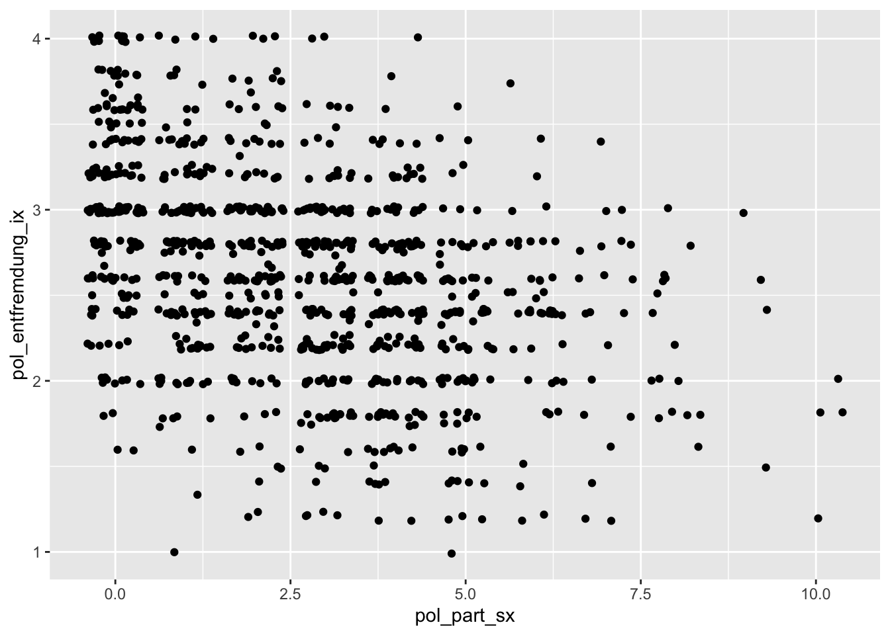
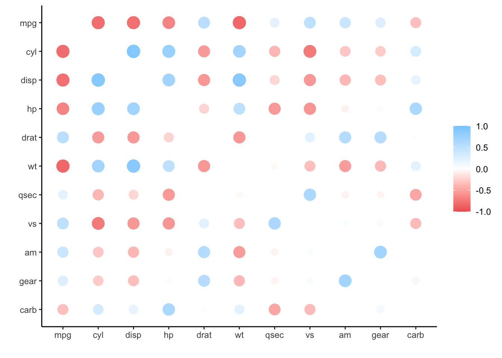

Kapitel 8 Bivariate Statistik
In diesem Kapitel geht es um bivariate Verfahren, also die gemeinsame Variation von zwei Variablen. Im Detail behandeln wir hier die Kreuztabelle und Chi-Quadrat sowie die Korrelation.
8.1 Kreuztabellen
Mit Kreuztabellen/Kontingenztabellen kann man die Verteilung einer Variable unter Berücksichtigung einer anderen in den Blick nehmen. Damit die Tabelle übersichtlich bleibt, sollten beide Variablen eher wenige Ausprägungen haben, also eher nominales oder ordinales Datenniveau haben.
Chi-Quadrat ist eine Maßzahl für die Differenz zwischen der Kontingenztabelle (=gemessene Werte) und der Indifferenztabelle (=die Tabelle die entstünde, wenn es keinen Zusammenhang zwischen den Variablen geben würde). Ist Chi-Quadrat = 0, besteht kein Zusammenhang zwischen den Variablen. Allerdings kann Chi-Quadrat abhängig von der Reihen- und Spaltenzahl, sowie der Fallzahl, unendlich hohe Werte annehmen. Chi-Quadrate für unterschiedliche Tabellen lassen sich deshalb schlecht vergleichen. Mit Cramer´s V liegt eine standardisierte Form von Chi-Quadrat vor, die zwischen 0 und 1 variiert. Über die Richtung von Zusammenhängen gibt aber auch Cramer´s V keine Auskunft. Dazu muss man in der Kreuztabelle nachsehen. Kreuztabellen und Chi-Quadrat-basierte Maßzahlen sind bei Hypothesentests immer dann das Mittel der Wahl, wenn die abhängige Variable nominales Datenniveau hat.
Im Folgenden verwende ich wieder den Geneartion-Z-Datensatz als Beispiel. Darin gibt es einige Variablen zur politischen Partizipation, z.B. ob man schon einmal an einer Wahl teilgenommen hat oder schon einmal eine Petition unterschrieben hat. Diese Variablen sind dichotom 0/1-codiert. Die “0” bedeutet dabei, dass ein:e Befragte:r die Partizipationsmöglichkeit noch nie wahrgenommen hat und “1” bedeutet, dass sie mindestens einmal wahrgenommen wurde.
Außerdem enthält der Datensatz noch die Variable “alter_g3,” die ich in drei Gruppen eingeteilt habe (“14 bis 17 Jahre,” “18 bis 21 Jahre” und “22 bis 24 Jahre”).
head(data)## # A tibble: 6 x 13
## lfdn alter_g3 pol_part_wahl pol_part_petiti… pol_part_sm_kom…
## <dbl> <chr> <dbl+lbl> <dbl+lbl> <dbl+lbl>
## 1 1634 22 bis … 0 [not quote… 0 [not quoted] 0 [not quoted]
## 2 1636 22 bis … 1 [quoted] 0 [not quoted] 1 [quoted]
## 3 1637 22 bis … 1 [quoted] 1 [quoted] 0 [not quoted]
## 4 1638 22 bis … 1 [quoted] 1 [quoted] 0 [not quoted]
## 5 1639 22 bis … 1 [quoted] 0 [not quoted] 0 [not quoted]
## 6 1640 22 bis … 1 [quoted] 1 [quoted] 0 [not quoted]
## # … with 8 more variables: pol_part_partei_veranstaltung <dbl+lbl>,
## # pol_part_demo <dbl+lbl>, pol_part_information <dbl+lbl>,
## # pol_part_gespraech <dbl+lbl>, pol_part_produktboykott <dbl+lbl>,
## # pol_part_parteiengagement <dbl+lbl>, pol_part_anderes_engagement <dbl+lbl>,
## # pol_part_nichts_davon <dbl+lbl>Ziel des nachfolgenden Skriptes ist es zu eruieren, ob sich der Anteil derjenigen, die eine Partizipationsmöglichkeit wahrgenommen haben, zwischen den Altersgruppen unterscheidet. Die Vermutung (Hypothese), die darin steckt ist natürlich, dass bei zunehmendem Alter der Anteil derjenigen steigt, die diese Möglichkeit bereits wahrgenommen haben. Das Beispiel hier im Buch beschäftigt sich insbesondere mit dem Unterschreiben von Petitionen.
Unsere H1 lautet also:
Der Anteil derjenigen, die bereits eine Petition unterschrieben haben, steigt mit zunehmendem Alter.
Bevor es mit dem Hypothesentest losgehen kann, müssen die erforderlichen Pakete geladen werden. Das tidyverse für die Pipe, janitor für die Kreuztabellen und Chi-Quadrat (χ2) und DescTools für Cramer´s V.
library(tidyverse)
library(janitor)
library(DescTools)8.1.1 Vorbereitung: Univariate Verteilung
Schauen wir uns zunächst einmal die univariate Verteilung der beiden Variablen an.
Dies ist hilfreich, um ein Gefühl für die Daten zu bekommen und ein Verständnis dafür zu entwickeln, welche Verteilung wir erwarten würden.
Das geht (wie im Kapitel zu den Häufigkeitstabellen beschrieben) am schönsten mit dem Paket janitor und der Funktion tabyl().
# Häufigkeitstabelle Altersgruppen
tabyl(data$alter_g3)## data$alter_g3 n percent
## 14 bis 17 Jahre 356 0.3542289
## 18 bis 21 Jahre 354 0.3522388
## 22 bis 24 Jahre 295 0.2935323Die drei Altersgruppen sind also alle etwa gleich stark besetzt, die älteste Altersgruppe ist ca. 5 Prozent kleiner als die anderen beiden.
Jetzt noch die Beteiligung an Petitionen:
# Häufigkeitstabelle Teilnahme Petitionen
tabyl(data$pol_part_petition)## data$pol_part_petition n percent
## 0 680 0.6766169
## 1 325 0.3233831Ein knappes Drittel der Befragten haben bereits eine Petition unterschrieben. Würde kein Zusammenhang/Unterschied in den Gruppen vorliegen, wäre also zu erwarten, dass etwa ein Drittel der Befragten in jeder Altersgruppe bereits eine Petition unterschrieben hat.
8.1.2 Kreuztabelle ausgeben
Mit dem Paket janitor und der Funktion tabyl() kann man nicht nur einfache Tabellen erstellen, sondern auch Kreuztabellen. Dazu gibt man die beiden Variablen, die man kreuztabulieren möchte, einfach nacheinander als Argumente in die Funktion. Die Variable, die zuerst übergeben wird, steht dann hinterher in den Zeilen, die zweite in den Spalten. Es ist eine Konvention, dass Variablen, die als unabhängig betrachtet werden, bei Kreuztabellen in den Spalten dargestellt werden. An einigen Stellen findet man es aber auch andersherum. Das Layout einer Tabelle hängt ja auch manchmal davon ab, wo man wieviel Platz hat und wenn man eine unabhängige Variable mit sehr vielen Ausprägungen hat, dann passt sie unter Umständen besser in die Zeilen.
Wir halten uns im folgenden Code jedoch an die Konvention und übergeben zusätzlich noch das Argument show_na = FALSE um fehlende Werte aus der Analyse auszuschließen.
Hier der Basis-Code für die Kreuztabelle mit janitor::tabyl():
# Kreuztabelle berechnen
my_crosstab <- data %>%
janitor::tabyl(pol_part_petition, alter_g3, show_na = FALSE)
my_crosstab## pol_part_petition 14 bis 17 Jahre 18 bis 21 Jahre 22 bis 24 Jahre
## 0 284 213 183
## 1 72 141 112Die Tabelle macht genau was sie soll, sie tabuliert die beiden Variablen im vorgegebenen Layout und gibt dabei die absoluten Häufigkeiten aus. Jetzt wäre es natürlich schön, wenn wir die Tabelle weiter formatieren können und z.B. Prozentwerte und auch Randspalten hinzufügen könnten. Das geht natürlich auch. Dazu beinhaltet das janitor-Paket eine Reihe von Funktionen, die alle mit adorn_ beginnen, z.B.:
adorn_totals()fügt Randhäufigkeiten hinzu. Mit dem Argumentwhere =kann man noch bestimmen, ob dies in den Spalten ("col"), oder in den Reihen ("row") oder in beidemc("row", "col")geschehen soll.adorn_percentages()berechnet die Prozentwerte. Mit dem Argumentdenominator =kann man noch bestimmen, ob dies in den Spalten ("col"), oder in den Reihen ("row") oder in beidem"all"geschehen soll.adorn_pct_formatting()dient der Formatierung der Prozentwerte. Über das Argumentdigits =kann man die Anzahl der Nachkommastellen festlegen.adorn_ns()fügt die absoluten Häufigkeiten wieder hinzu. Denn diese werden bei der Formatierung in Prozentwerte durchadorn_percentages()überschreiben.adorn_title()dient zur Beschriftung der Tabelle. Mitplacement = "combined"kann man z.B. in der ersten Zelle die beiden Variablennamen anzeigen lassen. Eine andere Variante wäreplacement = "top".
Probieren wir es aus:
# Kreuztabelle formatieren
my_crosstab %>%
adorn_totals(where = c("row", "col")) %>%
adorn_percentages(denominator = "col") %>%
adorn_pct_formatting(digits = 0) %>%
adorn_ns() %>%
adorn_title(placement = "combined")## pol_part_petition/alter_g3 14 bis 17 Jahre 18 bis 21 Jahre 22 bis 24 Jahre
## 0 80% (284) 60% (213) 62% (183)
## 1 20% (72) 40% (141) 38% (112)
## Total 100% (356) 100% (354) 100% (295)
## Total
## 68% (680)
## 32% (325)
## 100% (1005)Sehr hübsch! Durch die übersichtliche Formatierung mit den Prozentwerten können wir jetzt gut vergleichen, wie sich der Anteil derjenigen, die bereits Petitionen unterschreiben haben in den Altersgruppen unterscheidet. Zur Erinnerung, im Gesamten Sample waren es 32 Prozent, die diese Form der politischen Partizipation bereits genutzt haben (siehe auch Spalte “Total”).
Vergleicht man nun die Altersgruppen sieht man deutliche Unterschiede:
Insbesondere die erste Gruppe der 14- bis 17-Jährigen hat deutlich weniger Petitionen unterschrieben, als die anderen beiden Gruppen. Dies war erwartbar und entspricht im auch der Hypothese, die wir eingangs formuliert hatten. Möglicherweise spielt für diese Art der politischen Partizipation die Volljährigkeit eine besondere Rolle?
Zwischen den älteren beiden Altersgruppen ist hingegen kaum ein Unterschied. Der Prozentsatz sinkt sogar leicht ab, was unserer Hypothese nicht entsprechen würde. Allerdings ist die Differenz ohnehin sehr gering und kaum von Bedeutung.
Nach dem Augenschein der Kreuztabelle, scheinen wir also insgesamt auf einen interessanten Zusammenhang gestoßen zu sein, der unserer Hypothese auch entspricht. Aber ist dieser Zusammenhang auch signifikant?
8.1.3 Chi-Quadrat & Cramer´s V
Dazu ziehen wir im folgenden den Chi-Quadrat-Test heran, ebenfalls aus dem Paket janitor.
# Chi-Quadrat berchnen
janitor::chisq.test(my_crosstab)##
## Pearson's Chi-squared test
##
## data: my_crosstab
## X-squared = 37.226, df = 2, p-value = 8.249e-09Chi-Quadrat beträgt 37.2 (df = 2), bei einem sehr kleinen p-Wert. Der p-Wert 8.249e-09 bedeutet 8.249 * 10 ^ -9 also 0.000000008249. Das ist deutlich unter p < .001 und damit “signifikant.” Wir können deshalb davon ausgehen, dass der Zusammenhang/Unterschied, den wir hier beobachtet haben, überzufällig zu Stande gekommen ist. Die Daten unterstützen also unsere Hypothese H1.
Aber wie stark ist der gefundene Zusammenhang? Dabei hilft uns Cramer´s V, quasi das standardisierte Chi-Quadrat. Die Funktion dazu findet sich im Paket DescTools und heißt CramerV(). Sie benötigt als einziges Argument eine Kreuztabelle, bzw. die darin befindlichen Zahlen als Matrix (also auf keinen Fall die formatierte Tabelle). Die einfache Tabelle haben wir oben im Objekt my_crosstab gespeichert. Für die Berechnung von Cramer´s V muss noch die erste Spalte gelöscht werden, die die Ausprägungen der Variable zu Petitionen enthält. Über das Subsetting [, -1] können wir genau dies erreichen. Der Befehl löscht quasi alle Zeilen (durch das Weglassen der Angabe vor dem Komma) und alle Spalten bis auf die erste (nach dem Komma -1).
# Cramer´s V
DescTools::CramerV(my_crosstab[, -1])## [1] 0.1924605Cramer´s V beträgt .19. Es besteht also ein schwacher, aber signifikanter Zusammenhang zwischen dem Alter und der politischen Beteiligung mittels Petitionen.
Die Hypothese kann damit insgesamt als bestätigt angesehen werden, auch wenn wir einräumen müssen, dass nicht zwischen allen Altersgruppen Unterschiede bestehen. Stattdessen wird offenbar durch das Erreichen der Volljährigkeit ein relevanter Anstieg beim Unterzeichnen von Petitionen befördert. Spannend!
8.2 Korrelationen
Dieser Abschnitt ist den Zusammenhängen zwischen metrischen Variablen gewidmet. Dabei wird zunächst auf die grafische Analyse eingegangen und dann die Berechnung der Kovarianz und des Korrelationskoeffizienten r veranschaulicht. Dabei werden sowohl die Befehle aus base-R, als auch die entsprechenden Befehle aus dem Pakte psych verwendet. Zudem wird noch das Paket corrr vorgestellt, das zur explorativen, grafischen Analyse von Korrelationen dient.
Zunächst werden die entsprechenden Pakete geladen.
library(tidyverse) # für Scatterplots und die Pipe
library(psych) # für Korrelationen
library(corrr) # für KorrelationsmatrizenAls Datenbeispiel dient wieder der Generation-Z-Datensatz. Ich habe in diesem Datensatz zwei Indices gebildet, deren Zusammenhang wir hier untersuchen wollen.
Für die Politische Partizipation habe ich einen Summenindex gebildet. Er zählt, wie viele von zehn möglichen Aktivitäten der politischen Partizipation eine Person bereits ausgeführt hat (z.B. Wählen gehen, Petitionen unterschreiben, demonstrieren oder Konsumboykott).
Für die Politische Entfremdung habe ich einen Mittelwertindex gebildet, der auf fünf Items beruht, welche jeweils auf einer 4er-Skala von 1 = stimme überhaupt nicht zu bis 4 = stimme voll und ganz zu gemessen wurden. (Hier drei Beispielitems: Politik hat mit meinem Leben nichts zu tun, Entscheidungsprozesse in der Politik sind für mich meistens nicht nachvollziehbar und Den Parteien geht es nur um Macht).
Außerdem enthält der Datensatz noch die Variablen lfdn für die Fallnummer und das alter der Befragten.
head(df)## # A tibble: 6 x 4
## lfdn pol_part_sx pol_entfremdung_ix alter
## <dbl> <dbl> <dbl> <dbl+lbl>
## 1 1634 0 2.4 23 [23 Jahre]
## 2 1636 5 2.8 24 [24 Jahre]
## 3 1637 5 2.4 23 [23 Jahre]
## 4 1638 6 2.8 23 [23 Jahre]
## 5 1639 4 1.8 24 [24 Jahre]
## 6 1640 5 2.8 24 [24 Jahre]Im folgenden soll nun die folgende Hypothese getestet werden:
H1: Zwischen politischer Partizipation und politischer Entfremdung besteht ein negativer Zusammenhang.
Diese Alternativhypothese steht im Gegensatz zur folgenden Nullhypothese:
H0: Es gibt keinen (oder sogar einen positiven) Zusammenhang zwischen politischer Partizipation und politischer Entfremdung.
Die Nullhypothese müsste beibehalten werden, sofern wir bei der Berechnung der Korrelation einen Wert von r berechnen der größer oder gleich 0 ist oder wenn wir zwar ein negatives r berechnen, aber der p-Wert indiziert, dass dieses berechnete r sich nicht signifikant von Null unterschiedet. Andernfalls können wir davon ausgehen, dass in der Grundgesamtheit wohl eher die H1 zutrifft.
8.2.1 Streudiagramm
Wir starten zunächst mit einem Streudiagram/Scatterplot und nutzen dazu das Paket ggplot2 aus dem Tidyverse. Das Paket wird im nächsten Kapitel (ab Januar) noch ausführlicher erläutert werden. Die Funktion zum Anlegen eines Plots in ggplot2 ist ggplot(). Sie benötigt als erstes Argument den Datensatz und dann als zweites Argument eine Hilfsfunktion, die aes() heißt. Diese Funktion ist für die Ästhetik, also das Aussehen des Plots, verantwortlich. In unserem Fall sind das die beiden Variablen, welche wir auf der X- und der Y-Achse anordnen.
Nach dem Anlegen des Plots müssen wir dem Plot noch ein Geom hinzufügen. Der Begriff steht für geometrisches Objekt. Ein Geom ist im Prinzip eine Funktion für die Art der Grafik. Es beinhaltet z.B. statistische Transformationen die zur Darstellung der Grafik nötig sind und Default-Layout-Informationen. In unserem Fall möchten wir das Geom geom_jitter hinzufügen, also einen “zitternden” Scatterplot. Eine Übersicht über verschiedene Geome findet man hier. Das Geom wird mit dem Plot über ein + verknüpft. Diese Pluszeichen muss zwingend am Ende der vorigen Zeile stehen. Über das Pluszeichen kann man dem Plot auch noch weitere Veränderungen hinzufügen. Dazu später mehr.
Alternativ zum oben beschriebenen Vorgehen kann man auch die aes()-Funktion in die geom_-Funktion einbauen, das macht optisch keinen Unterschied.
Hier der Code für das zitternde Streudiagram:
df %>%
ggplot(aes(x = pol_part_sx, y = pol_entfremdung_ix)) +
geom_jitter() 
Betrachtet man den Output kann man die Beziehung zwischen den beiden Variablen schon erahnen. Es zwar keine klare Linie ersichtlich (das wäre auch sehr viel verlangt), aber man kann schon sehen, dass in der Tendenz hohe Werte von politischer Entfremdung mit niedrigen Werten von politischer Partizipation einhergehen und umgekehrt. Die Grafik spricht also für den vermuteten negativen Zusammenhang.
8.2.2 Kovarianz
Die Kovarianz ist die gemeinsame Variation der beiden Variablen, bzw. das Produkt der Abweichung beider Variablen von ihrem jeweiligen Mittelwert geteilt durch die Fallzahl. In R kann man die Kovarianz einfach über den Befehl cov() ausgeben lassen (Teil des stats-Paketes, wird üblicherweise mit base R geladen). Die Funktion benötigt lediglich die beiden Variablen/Vektoren, deren Kovarianz ermittelt werden soll:
cov(df$pol_part_sx, df$pol_entfremdung_ix)## [1] -0.4992269Im Beispiel ist die Kovarianz also -0.5. Das ist insofern gut, wel das Vorzeichen der Prognose aus der Hypothese entspricht. Allerdings können wir noch keine Aussage über die Stärke des Zusammenhangs machen, weil die Kovarianz ein unstandardisiertes Maß für die gemeinsame Variation der beiden Variablen ist. Sie berücksichtigt die Skalierung der Variablen nicht.
8.2.3 Korrelation mit base R/stats
Der Korrelationskoeffizient r (auch Pearson´s r oder Produkt-Moment-Korrelation) berücksichtigt die Skalierung, weil er die Standardabweichungen der beiden Variablen mit einbezieht. Er beschreibt die Beziehung zwischen zwei metrischen Variablen in einem Wertebereich von -1 über 0 bis +1. Der Wert +1 steht dabei für eine perfekt positive und -1 für eine perfekt negative Beziehung.
Auch der Korrelationskoeffizient lässt sich leicht mit dem stats-Paket berechnen:
cor(df$pol_part_sx, df$pol_entfremdung_ix)## [1] -0.3998827Das Vorzeichen bleibt verglichen mit der Kovarianz selbstverständlich dasselbe. Die Höhe des Betrags wird jedoch in einen Bereich zwischen 0 und 1 “gepresst.” Für unsere beiden Variablen ergibt sich eine mittlere Effektstärke von r = -0.4.
Mit einem Signifikanztest, bei dem ein p-Wert berechnet wird, kann man außerdem prüfen, ob ein Korrelationskoeffizient sich signifikant von Null unterschiedet (Inferenzstatistik). Die Funktion für den Signifikanztest lautet cor.test(). Neben den beiden Variablen, kann man der Funktion weitere Argumente mitgeben:
Das Argument
usebestimmt darüber wie mit fehlenden werten umgegangen werden soll. Es ist eigentlich nur dann relevant, wenn mehr als zwei Variablen korreliert werden sollen. Dann kann man darüber entscheiden, ob ein FAll für alle mögliche Korrelationen ausgeschlossen werden soll, wenn er bei einer Variable einen fehlenden Wert hat (listenweiser Fallausschluss) oder ob dieser Fall nur bei den Korrelationen ausgeschlossen werden soll, bei denen die Variable beteiligt ist (paarweiser Fallausschluss).Im Argument
alternativekann man festlegen, um was für eine Alternativhypothese es sich handelt. Hiernach bestimmt sich, in welche Richtung der Signifikanztest durchgeführt werden soll und ob einseitig oder zweiseitig getestet werden soll. Man kann hier die Optiontwo.sidedfür einen zweiseitigen Test festlegen, wenn man eine ungerichtete Hypothese aufgestellt hat. Für gerichtete Hypothesen stehen die Optionengreater(für positive Zusammenhänge) undless(für negative Zusammenhänge) zur Verfügung.
cor.test(df$pol_part_sx, df$pol_entfremdung_ix,
use = "complete.obs",
alternative = "less")##
## Pearson's product-moment correlation
##
## data: df$pol_part_sx and df$pol_entfremdung_ix
## t = -13.803, df = 1001, p-value < 2.2e-16
## alternative hypothesis: true correlation is less than 0
## 95 percent confidence interval:
## -1.0000000 -0.3552982
## sample estimates:
## cor
## -0.3998827Das Ergebnis ist ein kurzer “Bericht” über den Signifikanztest. Angegeben sind z.B. der p-Wert, das Konfidenzintervall und noch einmal der Korrelationskoeffizient. Aus dem p-Wert, der im Beispiel einen sehr niedrigen Wert (kleiner als die geforderten .05) aufweist, können wir schließen, dass der Wert r = -0.3998827 signifikant von Null abweicht, also mit einiger Wahrscheinlichkeit nicht zufällig zustande gekommen ist. Das spricht für unsere Hypothese und damit für die Existenz des vermuteten Zusammenhangs in der Grundgesamtheit. Wir können die Hypothese somit als durch die Daten bestätigt ansehen.
8.2.4 Korrelation mit psych
Den Korrelationskoeffizient kann man in R auch mit vielen anderen Paketen ausrechnen. Beispielhaft soll hier noch der Code für die Korrelation mit dem psych-Paket veranschaulicht werden. Dieses Paket benutzen wir ja auch für viele andere statistische Verfahren und man kann psych mit der Pipe benutzen (Tidyverse-Schreibweise). Der Output für die Korrelation sieht leicht anders aus.
Die Funktion für die Korrelation in psych lautet corr() (mit 2 r). Sie benötigt als erstes Argument den Datensatz mit außschließlich den Variablen, die korreliert werden sollen. Diese können direkt vor der Funktion mit einem select()- Befehl ausgewählt werden. Neben dem Datenobjekt kann man weitere Argumente angeben, z.B. über use den listen- oder paarweisen Fallausschluss und über method die Art der Korrelation. Neben dem standardmäßig eingestellten Wert pearson für den Korrelationskoeffizienten (Pearson´s r) gibt es nämlich noch weitere Maßzahlen für spezielle Daten (z.B. spearman für Rangdaten oder kendall für ordinale Daten).
df %>%
select(pol_part_sx, pol_entfremdung_ix) %>%
psych::corr.test(use="pairwise", method="pearson")## Call:psych::corr.test(x = ., use = "pairwise", method = "pearson")
## Correlation matrix
## pol_part_sx pol_entfremdung_ix
## pol_part_sx 1.0 -0.4
## pol_entfremdung_ix -0.4 1.0
## Sample Size
## [1] 1003
## Probability values (Entries above the diagonal are adjusted for multiple tests.)
## pol_part_sx pol_entfremdung_ix
## pol_part_sx 0 0
## pol_entfremdung_ix 0 0
##
## To see confidence intervals of the correlations, print with the short=FALSE optionDer Output sieht leicht anders aus als der oben dargestellte aus dem stats-Paket. Er hat drei wichtige Bereiche:
Eine Matrix für die Korrelationskoeffizienten. Hier wird die Korrelation jeder Variablen mit jeder anderen im Datensatz dargestellt. In unserem Fall sind das ja nur zwei. Aber mit der Funktion könnten sie auch 3 oder noch mehr Variablen miteinander korrelieren. – Jeweils natürlich nur paarweise. In dieser Matrix ist jede Korrelation doppelt enthalten: Einmal über und einmal unter der mittleren Diagonalen. Das liegt daran, dass die Korrelation 2 Mal berechnet wird: Zunächst mit der ersten Variable an erster und der zweiten an zweiter Stelle. Danach wird die Position der Variablen getauscht. Für Pearson´s r macht es jedoch keinen Unterschied, welche Reihenfolge die Variablen haben. Deshalb steht dort zweimal die gleiche Zahl. In der Diagonalen finden Sie die Korrelation einer Variablen mit sich selbst. Sie ist logischerweise jeweils = 1, also ein perfekter positiver Zusammenhang.
Der zweite Bereich gibt Aufschluss über die Sample-Größe. Er wird auch manchmal als Matrix dargestellt, nämlich dann, wenn die Fallzahl für die einzelnen Korrelationen unterschiedlich wäre. Das ist hier aber nicht der Fall.
Der dritte wichtige Bereich beinhaltet die p-Werte der Korrelationen. Im Beispiel sind alle p-Werte ausgesprochen niedrig, deshalb wird hier “0” dargestellt. Das ist natürlich der Rundung geschuldet, denn selbstverständlich ist der p-Wert nie exakt “0,” da es sich um eine Wahrscheinlichkeit handelt. Er nähert sich lediglich dem Wert Null an.
8.2.5 Partialkorrelation
Bei der Partialkorrelation wird der Einfluss einer dritten Variable aus der Korrelation zwischen zwei Variablen herausgerechnet. Das geschieht über die Residuen (vgl. zukünftiges Kapitel zur Regression/SDA2). Im psych-Paket kann man die Partialkorrelation einfach berechnen. Zur besseren Übersichtlichkeit kann man vorab im select()-Befehl die Variablen auf eine spezielle Weise gruppieren (das kann man aber auch weglassen, dann muss man sich aber merken, welche Variable die Einflussvariable war). Im Anschluss erfolgt die Partialkorrelation durch die Funktion partial.r() und dann durch die Funktion corr.p() der entsprechende Signifikanztest:
df %>%
select(x = c(pol_part_sx, pol_entfremdung_ix), y = alter) %>%
psych::partial.r() %>%
psych::corr.p(n =1003)## Call:psych::corr.p(r = ., n = 1003)
## Correlation matrix
## x1 x2 y
## x1 1.00 -0.38 0.22
## x2 -0.38 1.00 -0.05
## y 0.22 -0.05 1.00
## Sample Size
## [1] 1003
## Probability values (Entries above the diagonal are adjusted for multiple tests.)
## x1 x2 y
## x1 0 0.00 0.00
## x2 0 0.00 0.15
## y 0 0.15 0.00
##
## To see confidence intervals of the correlations, print with the short=FALSE optionDer Output sieht ähnlich aus wie zuvor, nur dass in den Zellen jetzt jeweils die Korrelation zwischen zwei Variablen dargestellt ist, bereinigt um die jeweils dritte. Für die uns interessierende Korrelation zwischen politischer Partizipation und politischer Entfremdung ist der Korrelationskoeffizient hier nur leicht gesunken. Er beträgt jetzt noch r-partial = -0.38. Der Einfluss des Alters auf unseren Zusammenhang war also vermutlich nicht besonders stark. Auch nach Kontrolle dieser Drittvariable hat unsere Alternativhypothese also Bestand.
Man kann sogar in der Korrelations-Matrix oben sehen, dass das Alter lediglich mit der Variable politische Partizipation einen Zusammenhang hat, aber kaum mit politischer Entfremdung. Vermutlich wird ein Teil der Varianz in der politischen Partizipation durch das Alter erklärt. Das diese Variablen ebenfalls kovariieren macht inhaltlich sogar Sinn: Wer älter ist, hatte bereits mehr Gelegenheit zur politischen Partizipation und einige Partizipationsmöglichkeiten kann man sogar erst mit einem gewissen Alter ausüben, wie beispielsweise das Wählen.
8.2.6 Korrelationsmatrizen darstellen
Zum Abschluss dieses Teils möchte ich noch kurz darauf eingehen, dass man natürlich auch mehrere oder sogar viele Korrelationen in einer Matrix darstellen kann. R liefert sogar ganz schöne Grafiken die Zusammenhänge zwischen metrischen Variablen übersichtlich darstellen können. Ein Paket, welches dazu benutzt werden kann, ist corrr.
Ich greife im folgenden auf einen anderen Datensatz zu, nämlich auf den Datensatz mtcars aus dem Tidyverse. In dem Datensatz sind Statistiken über verschiedene Automodelle gesammelt, aber der Inhalt ist an dieser Stelle nicht so wichtig.
Die Funktion correlate() aus dem corrr-Paket liefert zunächst die Korrelationsmatrix der Daten. Signifikanztest liefert das Paket nicht, denn es ist eher für die explorative Vorgehensweise geeignet (= nicht inferenzstatistisch-Hypothesenprüfend).
mtcars %>%
corrr::correlate() ##
## Correlation method: 'pearson'
## Missing treated using: 'pairwise.complete.obs'## # A tibble: 11 x 12
## term mpg cyl disp hp drat wt qsec vs am
## <chr> <dbl> <dbl> <dbl> <dbl> <dbl> <dbl> <dbl> <dbl> <dbl>
## 1 mpg NA -0.852 -0.848 -0.776 0.681 -0.868 0.419 0.664 0.600
## 2 cyl -0.852 NA 0.902 0.832 -0.700 0.782 -0.591 -0.811 -0.523
## 3 disp -0.848 0.902 NA 0.791 -0.710 0.888 -0.434 -0.710 -0.591
## 4 hp -0.776 0.832 0.791 NA -0.449 0.659 -0.708 -0.723 -0.243
## 5 drat 0.681 -0.700 -0.710 -0.449 NA -0.712 0.0912 0.440 0.713
## 6 wt -0.868 0.782 0.888 0.659 -0.712 NA -0.175 -0.555 -0.692
## 7 qsec 0.419 -0.591 -0.434 -0.708 0.0912 -0.175 NA 0.745 -0.230
## 8 vs 0.664 -0.811 -0.710 -0.723 0.440 -0.555 0.745 NA 0.168
## 9 am 0.600 -0.523 -0.591 -0.243 0.713 -0.692 -0.230 0.168 NA
## 10 gear 0.480 -0.493 -0.556 -0.126 0.700 -0.583 -0.213 0.206 0.794
## 11 carb -0.551 0.527 0.395 0.750 -0.0908 0.428 -0.656 -0.570 0.0575
## # … with 2 more variables: gear <dbl>, carb <dbl>Mit der Funktion rplot() kann man die Matrix in eine Korrelations-Grafik überführen:
mtcars %>%
corrr::correlate() %>%
corrr::rplot()##
## Correlation method: 'pearson'
## Missing treated using: 'pairwise.complete.obs'## Don't know how to automatically pick scale for object of type noquote. Defaulting to continuous.
Das Paket liefert außerdem weitere Funktionen, die dabei helfen, die Matrix und damit auch die Grafik schöner zu formetieren. Mit rearrange() kann man die Variablen in der Matrix nach der der Größe der Korrelation sortieren. Mit shave kann man die “doppelte” obere Hälfte des Plots abschneiden.
mtcars %>%
corrr::correlate() %>%
corrr::rearrange() %>%
corrr::shave() %>%
corrr::rplot()##
## Correlation method: 'pearson'
## Missing treated using: 'pairwise.complete.obs'## Registered S3 methods overwritten by 'registry':
## method from
## print.registry_field proxy
## print.registry_entry proxy## Don't know how to automatically pick scale for object of type noquote. Defaulting to continuous.
Sehr schön übersichtlich. Welche Variablen hier wie zusammenhängen sieht man auf den ersten Blick!
Wichtige Funktionen aus diesem Kapitel
| Funktion | Paket | Beschreibung | Wichtige Argumente/Bemerkung |
|---|---|---|---|
| Tabellenanalyse | |||
tabyl() |
janitor | Tabellen & Kreuztabellen | show_na = FALSE |
adorn_totals() |
janitor | Randhäufigkeiten hinzufügen | where = c("row", "col") |
adorn_percentages |
janitor | In Prozentwerte umwandeln | denominator = "col" |
adorn_pct_formatting |
janitor | Formatierung der Prozentwerte | digits = n |
adorn_ns() |
janitor | Absolute Häufigkeiten wieder hinzufügen | |
adorn_titel() |
janitor | Variablen in die erste Zelle schreiben | placement = "combined" |
chisq.test() |
janitor | Chi-Quadrat-Test | einfache Kreuztabelle |
CramerV() |
DescTools | Cramer´s V | Kreuztabelle ohne erste Spalte! |
| Kovarianz & Korrelation | |||
cov() |
stats | Kovarianz | |
cor() |
stats | Korrelation | |
cor.test() |
stats | Signifikanztest für r | use, alternative |
corr.test() |
psych | Korrelation + Signifikanztest | use, method |
partial.r() |
psych | Partialkorrelation | |
corr.p() |
psych | Signifikanztest für Partialkorrelation | n |
correlate() |
corrr | Korrelationsmatrix | |
| Grafiken | |||
ggplot() |
ggplot2 | Plot anlegen | aes() |
geom_jitter() |
ggplot2 | “zitternder” Scatterplot | |
aes() |
ggplot2 | “Ästhetik” des Plots | Variablen, die im Plot darzustellen sind |
rplot() |
corrr | Korrelations-Plot |